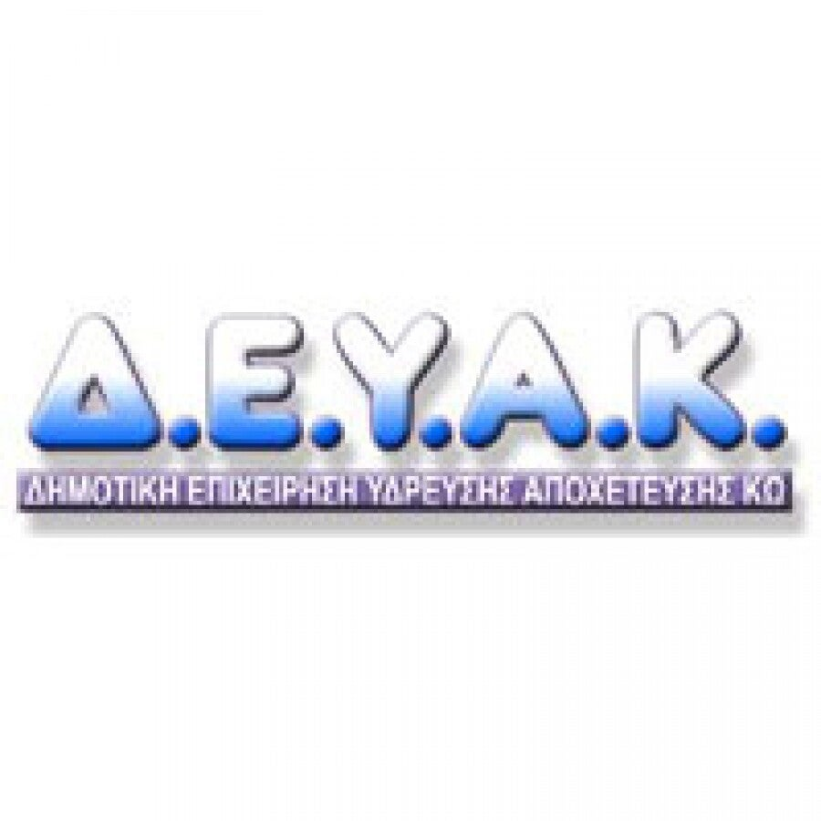

Wat jij kunt doen
Kijk of alleen jouw huis donker is of de hele straat. Een zaklamp op je telefoon helpt. Lift niet gebruiken als het licht uitgaat. Neem wat contant geld mee, juist omdat pinnen dan stopt.

ΔΕΔΔΗΕ (HEDNO) beheert het stroomnet. Hieronder staat hun openbare lijst van geplande onderbrekingen voor de Dodekanesos en voor Kos. Zonder stroom werkt pinnen niet.
De lijst van ΔΕΔΔΗΕ wordt geladen…
Kijk of alleen jouw huis donker is of de hele straat. Een zaklamp op je telefoon helpt. Lift niet gebruiken als het licht uitgaat. Neem wat contant geld mee, juist omdat pinnen dan stopt.